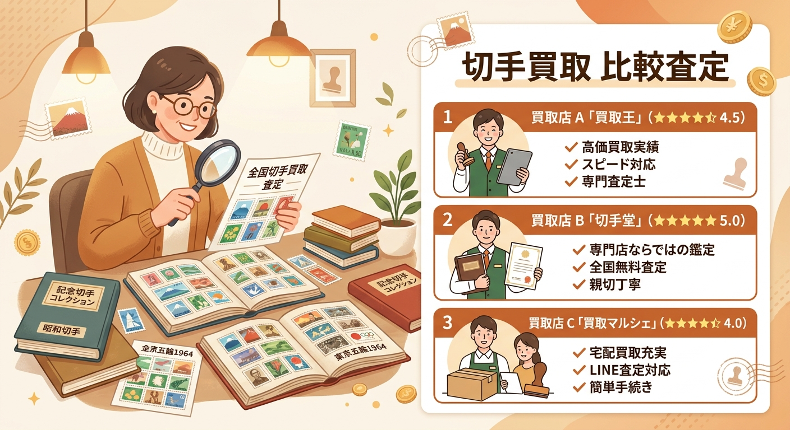
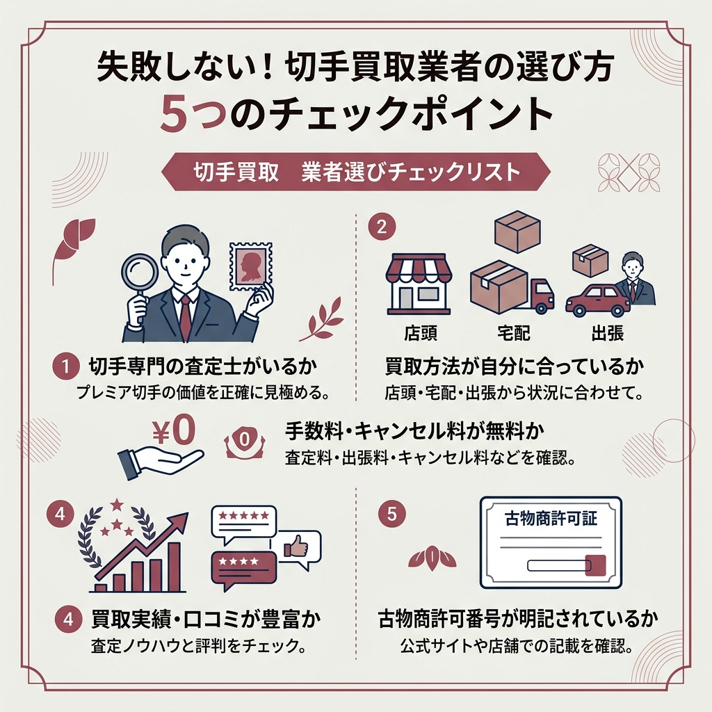
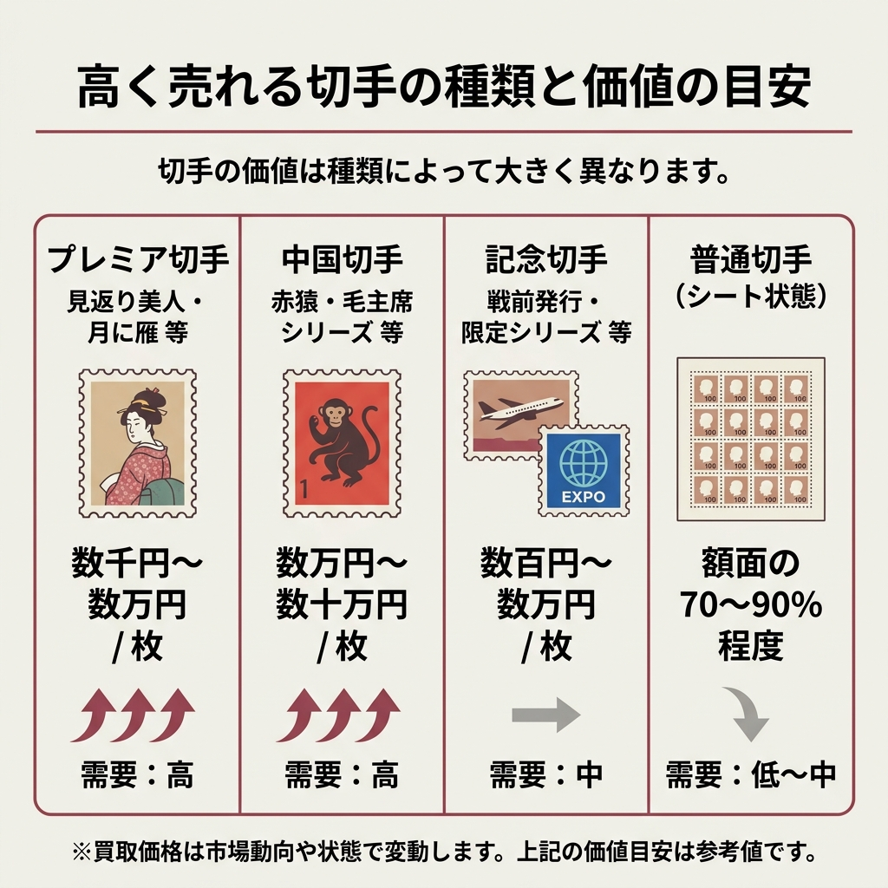
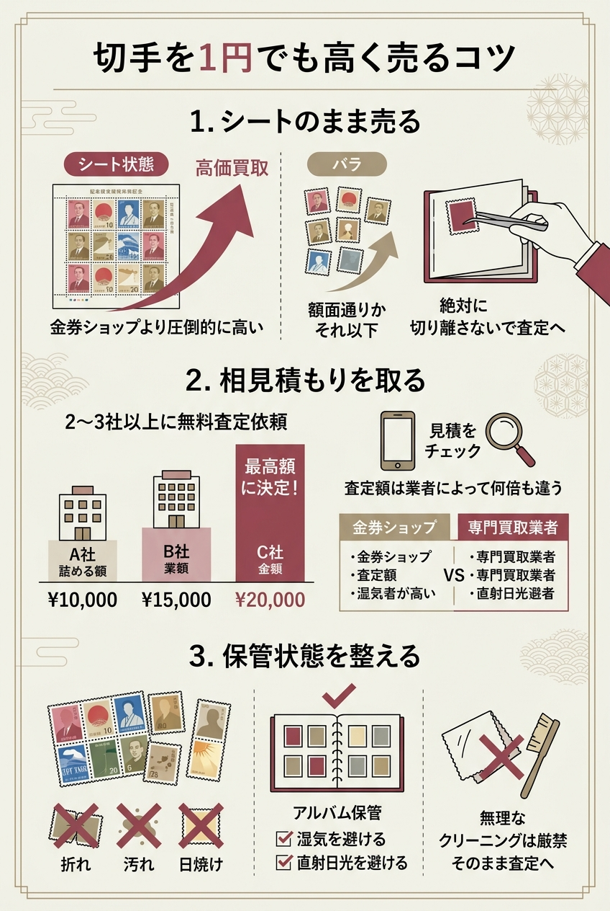
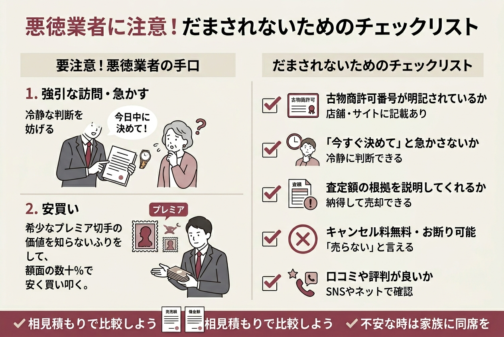
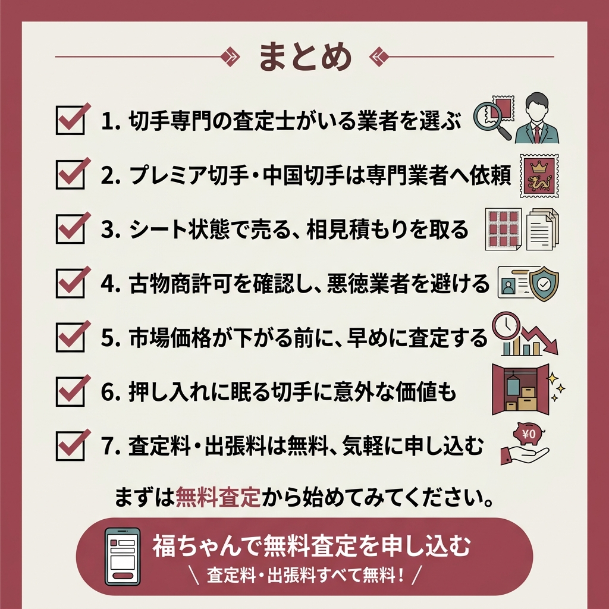

実家の押し入れから出てきた切手アルバム、遺品整理で見つかった大量のシート切手。
「これ、どこに売ればいいんだろう？」と悩んでいませんか。
切手の買取業者は数が多く、しかも業者ごとに査定額がかなり違うのが実情です。
金券ショップに持ち込んだら額面の70〜80%程度だったのに、専門業者ではプレミア価格がついた、なんてケースも珍しくありません。
切手のコレクションを地元の買取店に持っていったら「今は買取率が下がっていておすすめしない」と言われて…。結局どこに売ればいいのか分からなくなりました。
（Yahoo!知恵袋より）こういう声、本当に多いんですよね。大事なのは切手の専門知識がある査定士がいる業者を選ぶこと。この記事では、実績・口コミ・対応力を比較して厳選した10社を紹介します。
この記事では、切手買取でどこがいいか迷っている方に向けて、おすすめの買取業者10社を徹底比較しています。
業者選びのポイントから高く売れる切手の種類、悪徳業者の見分け方まで、2026年最新の情報をまとめました。

「古い切手が大量にあるけど、価値があるのか分からない」「女性一人で出張買取を頼むのはちょっと不安…」という方に、まずおすすめしたいのが福ちゃんです。
切手・骨董品・食器・ブランド品など幅広いジャンルを1社でまとめて査定してくれるので、遺品整理で色々な品物が出てきたケースでも一度に片付きます。
出張料・査定料・振込手数料がすべて無料なのも安心ポイント。女性のお客様限定で女性スタッフの訪問を指名できるサービスもあります。
社名が入っていない社用車で来てくれたり、査定は基本的に玄関先で完結したりと、プライバシーへの配慮も手厚いですね。
今なら買取金額5,000円以上で最大10万円上乗せの抽選キャンペーンも実施中です。
| 対応方法 | 出張買取・宅配買取・店舗買取 |
| 初期費用 | 無料 |
| 電話番号 | 0120-947-295 |
| 電話受付時間 | 8:00〜20:00（年中無休※年末年始除く） |
とにかく実績の数がすごい。累計4,300万点以上は業界でもトップクラスの規模です。
バイセルの良いところは、状態が悪い切手も諦めずに査定してくれること。汚れ・日焼け・折れがある切手でも対象になります。
Google Mapsでも新宿サブナード店は★4.8（口コミ1,232件）、渋谷サクラステージ店は★4.9（342件）と高評価でした。
持ち込み・出張・宅配の3方式に対応していて、全国どこからでも利用できるのも心強いですね。
| 対応方法 | 持ち込み・出張・宅配買取 |
| 初期費用 | 無料（査定料や出張料など査定にかかる費用が無料） |
| 対応エリア | 日本全国 |
| 累計買取数 | 4,300万点以上（2015〜2024年の合計） |
個人的に、ザ・ゴールドの「思いやりサポート」はもっと知られていいサービスだと思っています。
出張買取の際に窓の掃除やスマホの操作を手伝ってくれるんですよね。一人暮らしの高齢者にとって、こういう気配りはかなりありがたいんじゃないかと。
昭和37年創業で、直営店が全国に70以上。査定数は190万人を突破しています。
ただし秋田・島根・鳥取・沖縄の4県は出張買取の対象外なので、事前にエリア確認しておくと安心ですよ。
| 対応方法 | 店頭・出張・宅配・無料査定イベント・法人買取 |
| 初期費用 | 査定無料 |
| 対応エリア | 全国90％以上の地域（北海道から九州まで） |
| 営業時間 | 10:00〜18:00（年中無休、年末年始除く） |
記念切手の市場価値を無視して「額面の30%」で買い取ろうとされたことがある…。
（Yahoo!知恵袋より）それ、プレミア切手の価値を査定できていない業者の可能性がありますね。ザ・ゴールドのような専門査定士がいる業者なら、額面だけでなく市場価値をきちんと評価してくれますよ。
上場企業が運営しているという安心感は、正直かなり大きいです。
「怪しい業者に大事なコレクションを渡したくない」という方には、東証上場のマーケットエンタープライズが運営するこのサービスが合っています。
創業19年で累計利用者数940万人。買取品目は10万種類以上と業界最大級の規模です。
宅配買取では梱包キット（段ボール・緩衝材・伝票）を無料で送ってくれますし、査定も返送料もすべて無料。切手以外にも売りたいものがあれば出張買取がおすすめですね。
| 対応方法 | 宅配・出張・店頭 |
| 初期費用 | 完全無料（査定も返送料もすべて無料） |
| 対応エリア | 全国 |
| 電話番号 | 0120-945-991（通話無料） |
| 電話受付時間 | 9:15〜21:00（年末年始除く） |
20世紀デザイン切手 第1集〜第16集セット → 5,500円
記念切手 世界遺産 第1集〜第11集 コレクション → 3,700円
切手趣味週間 見返り美人 2,500円分（未使用） → 4,000円
切手だけでなく骨董品全般に強い業者です。
遺品整理で「切手と一緒に掛軸や焼き物も出てきた」という場合は、まとめて査定してもらえるのが便利ですね。
高い知識と経験を持った査定士が本来の価値を目利きし、独自の販売ルートで高価買取を実現しています。
問い合わせは電話・LINE・WEBから可能。受付時間は9:00〜19:00（年中無休※年末年始除く）です。
| 対応方法 | 出張買取・店頭買取・宅配買取 |
| 初期費用 | 査定などの手数料は全て無料 |
| 対応エリア | 日本全国 |
| 受付時間 | 9:00〜19:00（年中無休※年末年始除く） |
店頭・宅配・出張に加えてオンライン買取にも対応しているのがなんぼやの特徴です。
全国140店舗以上、海外にも20店舗以上を展開していて、宅配買取は最短当日査定＆振込というスピード感。
急いでいる方には合っているかもしれません。
| 対応方法 | 店頭買取・宅配買取・出張買取・オンライン買取 |
| 初期費用 | 査定料やキャンセル料は一切無料 |
| 対応エリア | 全国（140店舗以上） |
写真を撮ってLINEで送るだけで査定してもらえるのが手軽で良いですね。
「わざわざ店に行くのは面倒だけど、ちょっと価値を知りたい」という方にぴったりです。
中国切手やプレミアム切手の鑑定に強いのも特徴で、ブランド買取3冠を達成した実績があります。
査定料・キャンセル料はすべて無料です。
| 対応方法 | 店頭・宅配・出張 |
| 初期費用 | 無料お見積もり |
| 対応エリア | 全国 |
| 連絡先 | 0120-213-213 |
ここからは特定のニーズに合う3社を簡潔に紹介します。
全国1,750店舗以上という業界最大級のネットワークが強みです。近所に店舗がある確率が高いので、ふらっと持ち込みたい方には便利ですね。
創業26年、即日現金化対応で限度額なし。査定料・出張料・手数料もすべて無料です。
| 対応方法 | 店頭・出張 |
| 店舗数 | 全国1,750店舗以上 |
| 受付時間 | 9:00〜19:00（年中無休） |
24時間年中無休で電話受付しているので、思い立ったときにすぐ相談できます。
Google Mapsでは下高井戸駅前店が★4.8（口コミ156件）と高評価。最短1分で査定してくれるスピード感も魅力です。
| 対応方法 | 店舗買取 |
| 電話番号 | 0120-15-1234 |
| 査定時間 | 最短1分 |
出張買取に特化した業者で、切手1枚からでも無料で出張査定してくれるのがユニークなところ。
買取実績300万点、8日以内のクーリングオフにも対応しています。ただし対応エリアが関東・関西・東海に限られるので事前に確認してください。
| 対応方法 | 出張買取 |
| 初期費用 | 査定料・出張費無料 |
| 電話番号 | 0120-242-556 |
| 受付時間 | 9:00〜17:00（年末年始・お盆除く） |

業者がたくさんあるのは分かったけど、結局どう選べばいいの？
失敗しないための5つのチェックポイントを整理しました。
これが一番大事です。
プレミア切手の価値は額面では判断できません。
歴史的背景・希少性・保存状態・市場相場、こういった要素を総合的に見られる専門査定士がいないと、本来の価値より安く買い叩かれる可能性があります。
店頭・宅配・出張の3方式がありますが、自分の状況によって最適な方法は変わります。
大量にある場合は出張買取が便利ですし、数枚だけなら店頭持ち込みが手っ取り早いですね。
査定料・出張料・送料・キャンセル料、これらがすべて無料かどうかは必ず確認してください。
「査定は無料だけど出張料は有料」というパターンもあるので要注意です。
実績が豊富な業者は、それだけ査定のノウハウが蓄積されています。
SNSや口コミサイトでの評判もチェックしておくと、より安心ですよ。
買取業を営むには古物商許可が必要です。
公式サイトや店舗に許可番号が明記されていない業者は避けたほうが無難ですね。

「うちにある切手、高く売れるのかな？」と気になりますよね。
切手の価値は種類によってかなり差があります。
| 切手の種類 | 価値の目安 | 需要 |
|---|---|---|
| プレミア切手（見返り美人・月に雁等） | 数千〜数万円/枚 | 高 |
| 中国切手（赤猿・毛主席シリーズ等） | 数万〜数十万円/枚 | 高 |
| 記念切手（戦前発行・限定シリーズ） | 数百〜数万円 | 中 |
| 普通切手（シート状態） | 額面の70〜90%程度 | 低〜中 |
切手コレクターの間で「別格」とされるのがプレミア切手です。
1948年発行の「見返り美人」や1949年の「月に雁」は、浮世絵をモチーフにしたデザインの人気が今でも根強く、1枚でも高額査定が期待できます。
竜文切手や桜切手といった日本最初期の切手シリーズも、状態次第では驚くような値段になることがあるみたいです。
ここ数年で価値が急騰しているのが中国切手です。
文化大革命時代（1966〜1976年頃）に発行された切手は、当時切手の収集や輸出が制限されていたため現存数がとても少なく、希少価値が高いんですよね。
特に1980年発行の「赤猿（子ザル）」は中国初の年賀切手として人気があり、1枚で数十万円の値がつくこともあるとのこと。
オリンピックや万博などを記念して発行された切手も、種類によっては価値があります。
正直なところ、比較的新しい時代の記念切手は発行枚数が多く、額面通りかそれ以下になることも少なくありません。
狙い目は戦前に発行されたものや発行枚数が限定的だったシリーズです。
バラの状態だと額面通りかそれ以下になりますが、シート状態で折れ・汚れなく保管されていれば、比較的高い換金率で買い取ってもらえます。
「どうせ普通の切手だから」と諦めないでくださいね。
切手の買取価格は市場動向や状態によって大きく変動します。上記の価値目安はあくまで参考値です。正確な査定額は、必ず専門業者に直接確認してください。

せっかく売るなら、少しでも高い値段で買い取ってもらいたいですよね。
これ、意外と知らない方が多いんですが、切手はシート状態のほうが圧倒的に高く売れます。
バラバラに切り離すと額面通りかそれ以下になりがちです。
シートで保管されている切手は、絶対に切り離さないでそのまま査定に出してください。
シートで切手がたくさんあるんですけど、金券ショップと切手買取業者、どっちが高く売れるんでしょうか？
（Yahoo!知恵袋より）プレミア切手がなければ金券ショップでも換金できますが、記念切手やレアな切手が混じっている場合は専門業者のほうが高くなる可能性が高いですよ。両方に見積もりを出すのがベストです。
1社だけで決めるのは正直もったいないです。
最低でも2〜3社に無料査定を依頼して、査定額を比較しましょう。
同じ切手でも業者によって査定額が何倍も違うケースもあるんですよね。
折れ・汚れ・日焼けは査定額ダウンの原因になります。
湿気を避けて、直射日光の当たらない場所に保管するのが基本です。
ただし無理にクリーニングしようとして逆に傷つけてしまうのは逆効果。そのままの状態で査定に出すのが一番です。
記念切手・プレミア切手・中国切手がないかチェック。
バラバラにせず、そのままの状態で保管。
査定額を比較して、最も高い業者に決める。

残念なことですが、買取業界には悪質な業者も存在します。
特に切手は価値の判断が難しいぶん、知識のない売り手が損をしやすいジャンルです。
「無料査定」をうたって訪問し、強引に買い取ろうとするパターンがあります。「今日中に決めないと値段が下がる」などと急かしてきたら、その場で断ってください。冷静に判断する時間を与えない業者は信用できません。
希少なプレミア切手の価値を知らないふりをして、額面の数十%で安く買い叩くケースも報告されています。
こういったリスクを避けるためにも、やはり相見積もりが大事なんですよね。
不安な場合は、必ず家族や知人に同席してもらってから出張買取を利用してください。
「買取って具体的にどう進むの？」と思っている方向けに、3つの方法別に流れを整理しました。
大量の切手がある方や外出が難しい方に向いています。
電話やWebで申し込むと、査定士が自宅まで来てくれます。
玄関先での査定もOKで、査定額に納得すればその場で現金払いになるケースが多いです。
日中忙しい方や近くに店舗がない方におすすめです。
申し込むと無料の梱包キットが届くので、切手を詰めて送るだけ。
ただし発送から入金まで数日かかる点には注意してくださいね。
査定士と直接話しながら進めたい方に。
予約不要の店舗が多く、持ち込めばその場で査定・現金化できます。
切手の買取方法は「出張」「宅配」「店頭」の3つが主流。自分のライフスタイルや切手の量に合わせて選ぶのがベストです。
各社公式サイトの情報より

押し入れに眠っている切手、思った以上の価値があるかもしれません。
まずは無料査定から始めてみてください。